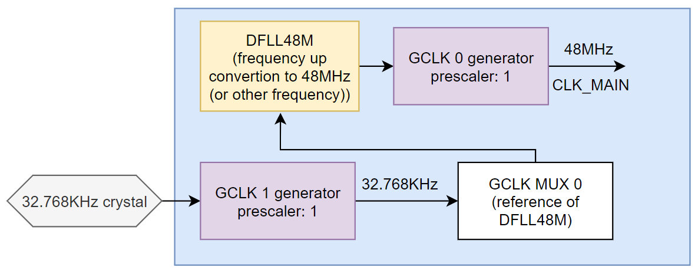

Fangzheng Liu
Why all SAMD21 Arduino boards only have one 32.768KHz Crystal?
I used STM32 MCU before. All the chips I used have internal oscillators to offer clock for CPU and peripherals. They can also be clocked through external crystals/oscillators. Normally there should be one 32.768KHz crystal to offer clock for RTC and some other peripherals have no high-frequency clock requirement, and a few-MHz crystal to offer clock for CPU and other components.
Then I turned to SAMD21 MCU. I found that all the Arduino boards based on SAMD21 only have one 32.768KHz crystal. I read the datasheet and found that SAMD21 can also has an external MHz crystal to offer clock for CPU. So I was wondering why all the Arduino boards only have one 32.768KHz crystal.
Then I read the CLK part of the SADM21, and I found it was a little bit confusing at first since it's flexible and can be configured in many ways. Finally, I figured out how it works.
Then turned to Arduino source code. There is a function that's called
after reset before the setup() and loop() function. It's called
systemInint(), in .../.platformio/packages/framework-arduino-samd-adafruit/cores/arduino/startup.cpp.
here is the part of the code comments that defines the clock configuration in Arduino framework:
//********************** SAMD21 *********************//
/**
* \brief SystemInit() configures the needed clocks and according Flash Read Wait States.
* At reset:
* - OSC8M clock source is enabled with a divider by 8 (1MHz).
* - Generic Clock Generator 0 (GCLKMAIN) is using OSC8M as source.
* We need to:
* 1) Enable XOSC32K clock (External on-board 32.768Hz oscillator), will be used as DFLL48M reference.
* 2) Put XOSC32K as source of Generic Clock Generator 1
* 3) Put Generic Clock Generator 1 as source for Generic Clock Multiplexer 0 (DFLL48M reference)
* 4) Enable DFLL48M clock
* 5) Switch Generic Clock Generator 0 to DFLL48M. CPU will run at 48MHz.
* 6) Modify PRESCaler value of OSCM to have 8MHz
* 7) Put OSC8M as source for Generic Clock Generator 3
*/
Now I understand why there must be a 32.768KHz crystal and there is only one crystal.
Also this means I can have a sperate MHz crystal to offer clock for CPU and other components,
but, why bother...
And here is how the clock is configured:

In the systemInit(), in the DFLL48M frequency up conversion part,
when setting the multiply factor, the code is like this:
SYSCTRL->DFLLMUL.reg = SYSCTRL_DFLLMUL_CSTEP( 31 ) | // Coarse step is 31, half of the max value
SYSCTRL_DFLLMUL_FSTEP( 511 ) | // Fine step is 511, half of the max value
SYSCTRL_DFLLMUL_MUL( (VARIANT_MCK + VARIANT_MAINOSC/2) / VARIANT_MAINOSC ) ; // External 32KHz is the reference
where VARIANT_MCK = 48000000, and VARIANT_MAINOSC = 32768. At first I didn't understand why need to
add VARIANT_MAINOSC/2 to VARIANT_MCK. Then ChatGPT gave me the answer:
The VARIANT_MAINOSC/2 term is added to the target frequency before dividing by VARIANT_MAINOSC.
This addition is likely included to round the result to the nearest integer when performing the division.
The addition of half the oscillator frequency is a common technique to perform a more accurate rounding
when converting a real number to an integer.